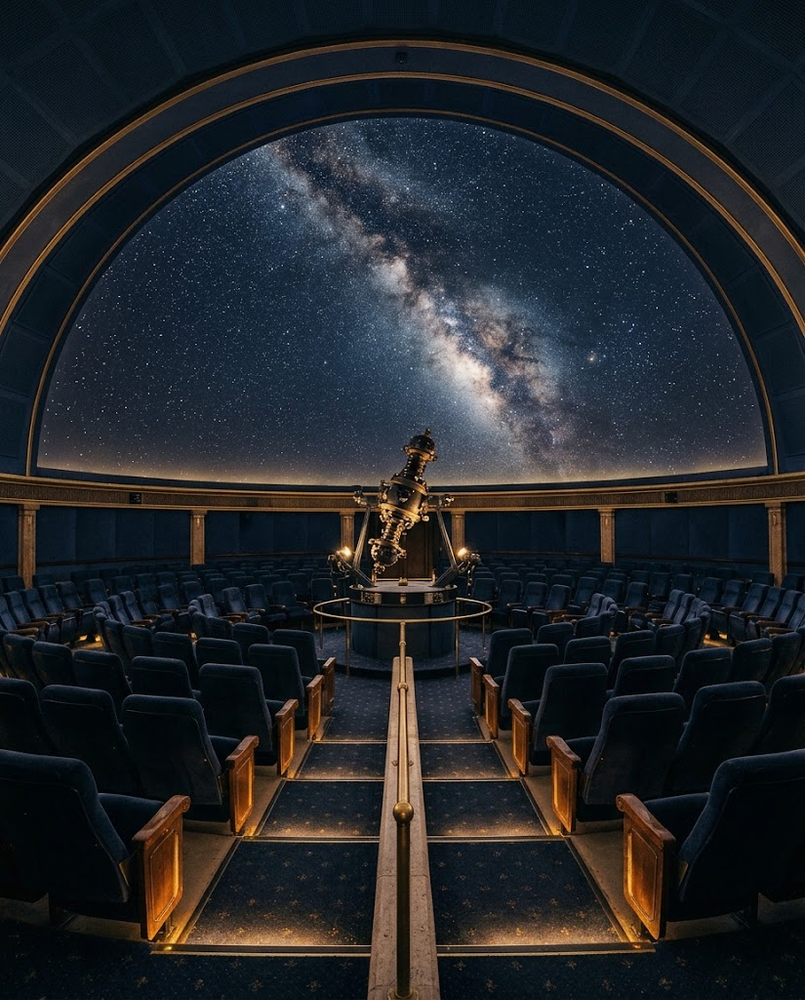
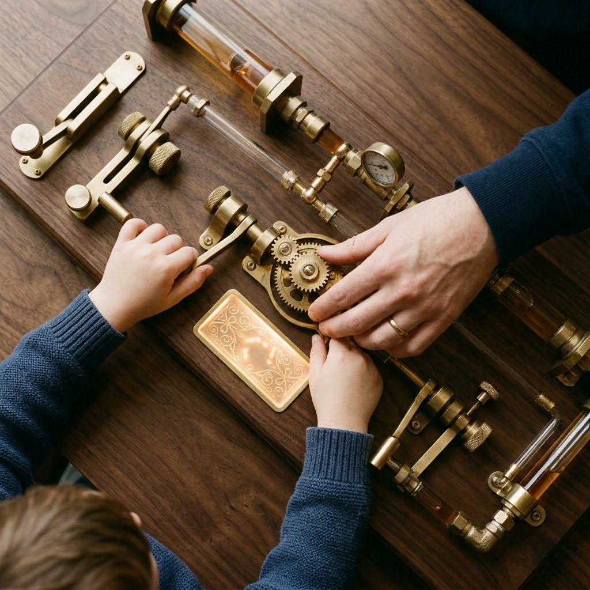
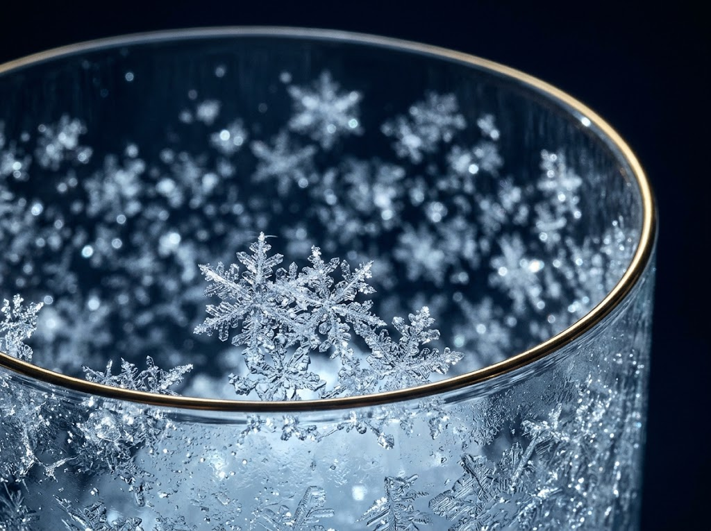

★★★★
プラネタリウムだけ鑑賞しました。上映プログラムは、ドラえもんと札幌の星空案内。ツーリストで、札幌の方角がよくわかっていなかったので、大変勉強になりました。リアルな星空をみてみたい。


札幌市青少年科学館は、1981年（昭和56年）に開館しました。科学や科学技術の知識の普及・啓発を通じて、創造性豊かな青少年を育成することを目的に設立された施設です。
創業者個人ではなく、札幌市の政策により設置された公立の理工系博物館です。
管理運営：公益財団法人札幌市生涯学習振興財団
宇宙や地球科学、雪や氷の環境など、北方圏の特色を活かした多彩な展示と体験型コーナーが充実しています。
全国初の人工降雪装置をはじめとする独自設備を備え、子どもから大人まで楽しめる科学教育機関として高く評価されています。
地域のボランティア組織による解説や支援が、市民参加型の施設として運営の質を高めています。
約1億個の星を映し出す大型プラネタリウムで、宇宙の広がりを体感できます。
科学や宇宙について、楽しく学べる200点近い体験型展示が並びます。

プラネタリウムだけ鑑賞しました。上映プログラムは、ドラえもんと札幌の星空案内。ツーリストで、札幌の方角がよくわかっていなかったので、大変勉強になりました。リアルな星空をみてみたい。
展示物の見せ方や体験のさせ方がすごく面白く、子供も楽しみながら色々学ぶ事が出来ます。2階にあるゲームを通してのカーリング体験なども、なかなか他の施設ではできないと思います。